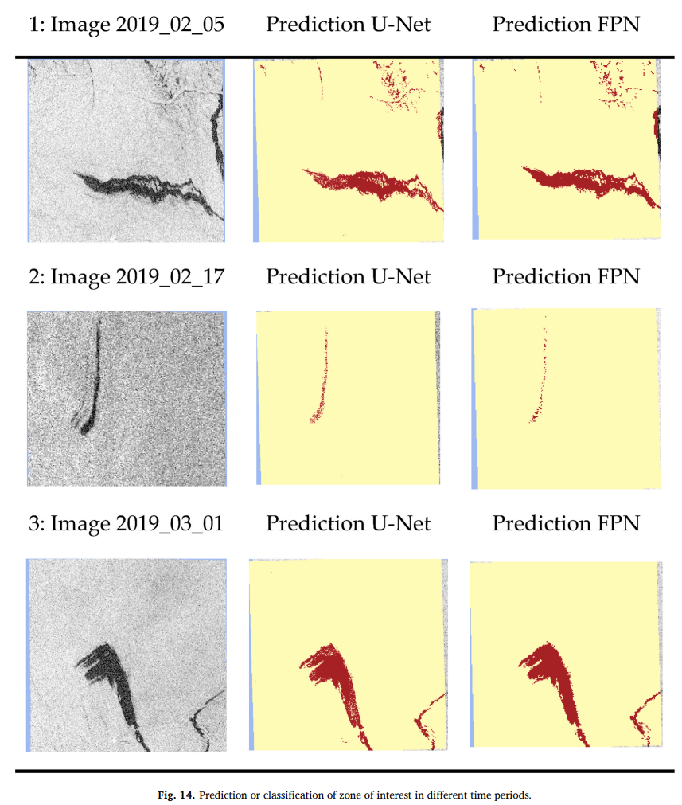

Week9 - Synthetic Aperture Radar (SAR)
We heard the SAR from the week 4, when it comes to application, we need to understand its practical implications.
Summary
SAR, a radar device, measures the intensity and phase of backscattered signals across azimuth and range directions, correlating time bins with Earth’s locations. The ‘Synthetic Aperture’ uses sensor motion to simulate a large antenna, ensuring adequate azimuth resolution (Google 2024). However, it is not perfect.
SAR imaging has its drawbacks, including speckle noise, which gives a ‘salt-and-pepper’ look to uniform areas due to the coherent microwave radiation, challenging to fully eliminate. Additionally, SAR backs-cattering varies with the incidence angle, making targets appear differently across the swath’s near and far ranges. Terrain relief also significantly impacts backscattering, with slope orientation causing foreshortening or shadowing, depending on its angle relative to the SAR (Google 2024).
- Polarization in Radar Systems(Natural Resources Canada 2024)
Radar systems create polarized waves using antennas designed to transmit and receive electromagnetic (EM) waves of specific polarization. Different antenna types (horns, waveguides, dipoles, patches) ensure waves are polarized as intended. There are two types of polarization. Linear Polarization: Horizontal (H) and Vertical (V). Circular Polarization: Right Hand Circular (R) and Left Hand Circular (L), useful in weather radars. These are very abstract contents, it is important to try it in practical by myself.
Change detection in SAR compares images from different times to spot changes, using statistical methods rather than direct subtraction to account for SAR’s unique characteristics. For instance, analyzing pre- and post-disaster SAR images helps assess damage from floods or conflicts. Statistical techniques, like t-tests, evaluate differences between two data-sets, revealing changes such as disaster impacts. Standard deviation measures data variability in SAR images over time, pinpointing areas with significant changes or unusual activity.
East London change
Apply Change Detection to monitor differences in structures over time revealed that the coastline, potentially affected by a tsunami, saw minimal impact on buildings. Surprisingly, the significant changes were observed mostly in agricultural areas, rather than in built-up structures.
Application
- Casa study: Google Earth Engine app using Sentinel 1 SAR and deep learning for ocean seep methane detection and monitoring (@ Hernández-Hamón et al. 2023)
This study explores the application of deep learning, particularly deep belief networks (DBNs), as a novel approach to develop a global road safety performance function (SPF). Traditional regression models, while useful, face limitations in capturing the complex, non-linear relationships inherent in crash data across different highways and regions. The incorporation of DBNs promises a more flexible and accurate modeling framework, capable of addressing these challenges by leveraging the power of deep learning DiGiacomo et al. (2004).
The field of machine learning, especially artificial neural networks (ANNs) (@ Hernández-Hamón et al. 2023), has made significant strides in simulating human cognitive functions and solving complex pattern recognition problems. However, traditional ANNs (DiGiacomo et al. 2004) struggle with non-convex optimization and require extensive training data, limiting their applicability. Deep learning (DL), through structures like DBNs, offers a solution by efficiently learning feature representations without needing labeled training data, showcasing superior performance in various domains, including road safety studies.

The investigation into using DBNs for developing global SPFs has demonstrated the model’s capability to surpass traditional regression-based approaches in accuracy and generalization. This research paves the way for future explorations into deep learning applications in road safety, promising more sophisticated and adaptable models for predicting and mitigating crash risks.
More SAR continues from week 4
Drawback?
Interferometry Synthetic Aperture Radar (InSAR)
Reflection
I found the SAR technology mixed with deep learning like DBNs pretty amazing. It’s like having a high-tech camera in the sky that can see changes on Earth, and using some smart computer tricks to make sense of all those pictures. The idea of using this tech for spotting methane leaks with the help of Google Earth is like a real-life game of “Where’s Waldo?” for environmental protection, and that’s super important for looking after our planet.
The bit about polarization in radars was a bit tricky, but think of it as different ways to send out radio waves to catch different types of information. Some waves are good for one thing, like weather forecasting, while others are better for something else. Using stats to spot changes in SAR images is like using a magnifying glass to find clues in a detective story. It’s all about paying attention to the details and figuring out what’s changed, which can help in seeing if a flood has happened or if a building has been built. And Deep learning, which is like teaching computers to learn and think a bit like us, is shaking things up in how we predict road safety. Instead of just guessing, we’re teaching computers to make smarter predictions, which is like upgrading from a flip phone to a smartphone.
Even if I don’t use this exact SAR or deep learning stuff in my job someday, understanding how to collect data carefully and analyze it is going to be really useful, no matter what I end up doing. It’s like learning the rules of the game before you start playing.